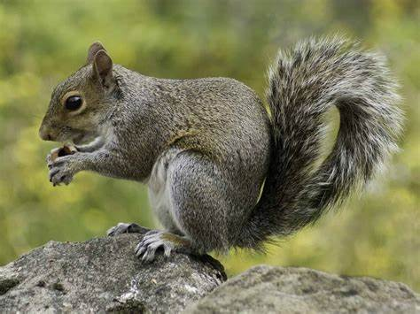

A squirrel is a small, agile rodent known for its bushy tail and sharp claws. They are great climbers and are often seen darting up trees. Squirrels eat nuts, seeds, fruits, and sometimes small insects. They are known for storing food in hidden spots to prepare for winter. You can find them in forests, parks, and even urban areas.
